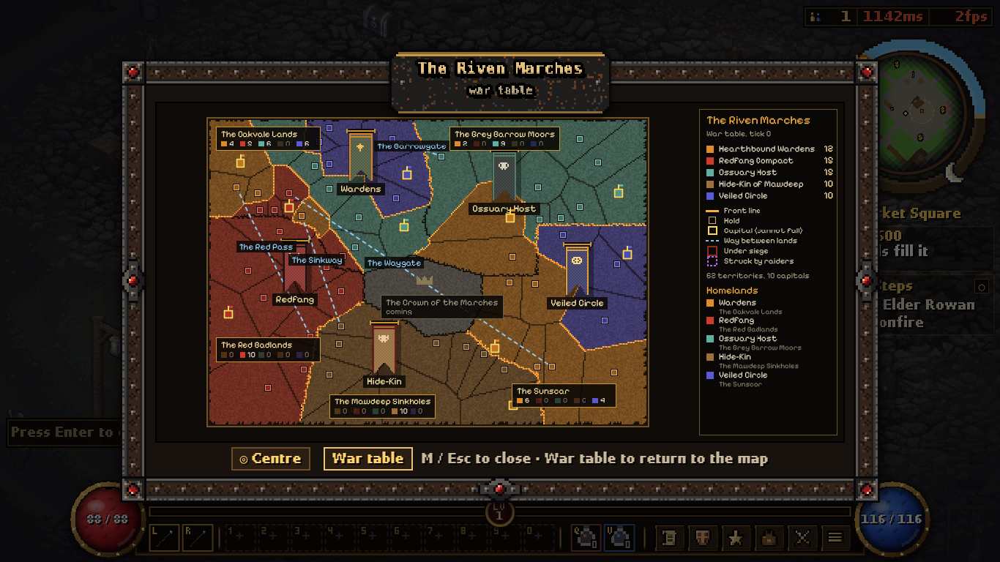
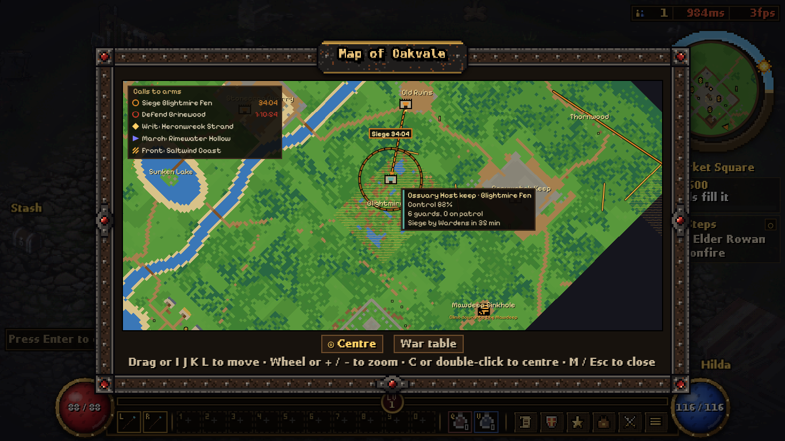
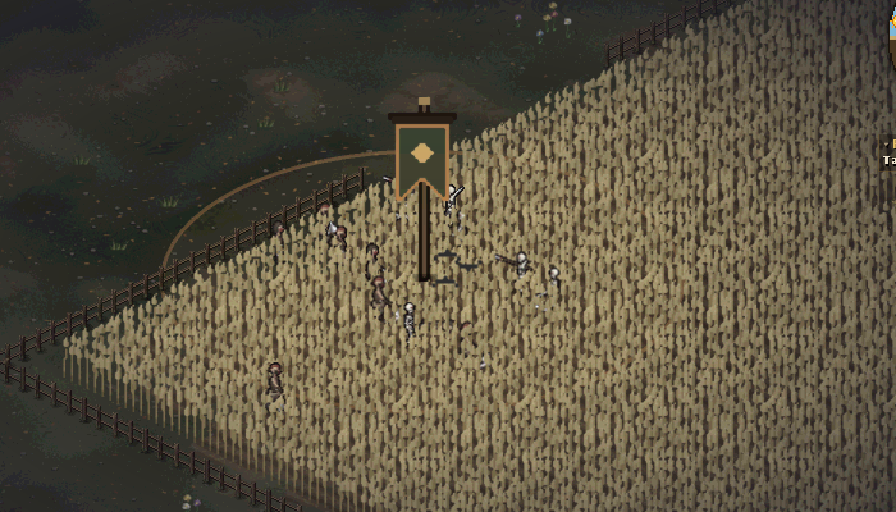

Five clans fight over the whole world, day and night, whether you play or not. This page explains, in plain words, how they attack each other, how you join a fight, and what you get for it.
Start here
The war in one minute
The world is cut into territories (about 70). Each one is held by one of five clans. Its fort is called a Hold.
Every 10 minutes the war takes a step (a war tick). Each clan sends its army at the lands next to its own. Where the attacker is stronger, the holder loses Control of that land.
When Control drops to 25 or less, a siege is announced. You get one hour of warning. When the hour is up, the land changes hands if the attacker is still stronger.
You join by swearing an oath to a clan at a standard (a clan flag pole, one or two in every territory). You need level 5.
After that, everything you do against your clan's enemies earns valor for your clan (it becomes extra soldiers at the next war tick) and renown for you (ranks, titles, gold).
Press M for the map. The Calls to arms box tells you where your clan needs you right now.
Who fights
The five clans
Each clan has a homeland (one of the five big lands of the continent), a capital city that can never fall, and its own way of fighting. You may swear to any of them, monster clans included.
Clan
Homeland
Capital city
How it fights
The Hearthbound Wardens (humans)
The Oakvale Lands
Hearthhold
Palisades and strong forts. Hard to dislodge.
The Redfang Compact (bandits)
The Red Badlands
Scarwall
Raids. Hits fast and hard, often where you don't expect it.
The Ossuary Host (undead)
The Grey Barrow Moors
Marrowkeep
Sieges, strongest at night. Brings a bone battering ram to the gate.
The Hide-Kin of Mawdeep (beast-folk)
The Mawdeep Sinkholes
Deepden
Tunnels. Can strike two lands deep and pop out of the ground behind the front.
The Veiled Circle (mages)
The Sunscar (the desert)
Duskveil
Rituals at noon: magic circles that strengthen their grip on a land.
Each clan is strong against one other (Wardens beat Redfang, Redfang beat the Veiled, the Veiled beat the Host, the Host beat the Hide-Kin, the Hide-Kin beat the Wardens), so no clan can win everything. In the middle lies the Crown of the Marches, neutral ground everyone fights over (see the Reckoning).
The war without you
How the clans attack each other

The war table (M, then the War table button). Each coloured cell is a territory, coloured by its clan. Orange lines are front lines; a red square is a land under siege.
1. Every 10 minutes: the war tick
Each clan earns soldiers from the land it holds. Lands close to its capital give more; lands far away give less (long supply lines). The clan's leader then decides which neighbouring lands to attack and how much army to send to each.
2. Attack against defence: Control
Every territory has a Control number from 0 to 100: how firmly its clan holds it. If the attack on a land is stronger than its defence, Control goes down. A quiet land slowly wins Control back.
3. The siege: one hour of warning
When Control falls to 25 or less, the attacker lays siege. A horn sounds, the Herald announces it in chat, and a countdown of one hour starts. When the hour is up, if the attacker is still stronger than the defence (defenders get a bonus at their walls), the land changes hands. If not, the siege fails. That hour is there so players can come and tip the balance.
4. Marching columns and big battles
Fronts follow the roads: lands meet in the war only where a border road joins them, the same roads you walk. The gates and portal stones are quick ways for heroes, not for armies.
Heartland: the quiet inner meadows of Oakvale (the low-level zones round the village) always stay with the Wardens. No army strikes them, so new heroes level in peace.
Columns: armies don't teleport. Soldiers march in columns along the roads from Hold to Hold. When two enemy columns meet on a road, they fight.
Pitched battles: three times a day, at 13:00, 19:00 and 21:30 (Swiss time), two clans meet in the open at the hottest front: up to 140 soldiers on the field and three banners to hold. You get a notice 30 minutes before.
Stormings: when a siege is very close to a draw, it is settled by a battle at the gate.
5. Clan tricks
The Ossuary Host rolls a bone ram to the gate of a besieged Hold. It stops while a defender stands near it.
The Hide-Kin open a tunnel mouth in the land they attack; soldiers come out of it in waves until someone collapses it.
The Veiled Circle channel a magic circle at noon. Kill the three acolytes to break it.
Every clan sends supply carts with escorts along its roads. Escort yours, or raid the enemy's.
6. Brakes so no one wins forever
Capitals never fall. A clan can be pushed back, never wiped out.
Night Raiders hunt the clan that holds the most land, striking its weakest borders at night.
Rally: the smallest clan gets a bonus: its heroes' valor counts 1.3 times, and renown and writ pay are higher.
Who gives the orders?
Each clan has a leader (Captain Hale for the Wardens, the Redfang Chief, the Pale Marshal of the Host, the Hide-Mother, the Veiled Oracle). Today they follow each clan's set battle plan. AI-run war councils are being prepared to take over the planning; none leads yet. When one does, it plays by exactly the same rules.
Step by step
How you join a battle
Reach level 5. Below level 5 you are left out of the war entirely: soldiers ignore you and you can't hurt them.
Find a standard. A standard is a tall pole with a clan flag and a ring on the ground. Every territory has one or two, usually near its Hold. Walk into the ring and press E.
Swear your oath. Pick one of the five clans. You can change clans once a day. Your name now shows your clan's little flag, so other players can see your side.
Open the map with M. The Calls to arms box lists where your clan needs you: sieges with their countdown, lands to defend, your writ, marching columns and fronts. Press War table to see the whole continent; it shows the route to any territory you click.
Travel there. Use the portal stones to get close, then walk. In the world, soldiers' names are coloured: green = your side, grey = neutral, red = enemy. Only red soldiers can be attacked.
Fight. Kill enemy soldiers, stand in the rings of a siege or battle, wreck rams, collapse tunnels, raid carts, raise your banner over an enemy Hold. Everything you do counts at the next war tick (within 10 minutes).
Pick up war writs (optional) at a bounty board: up to 3 a day, small jobs like "kill 6 soldiers in this land" that pay gold and renown.

The map (M). Top left: Calls to arms. The ring with "Siege 34:04" is a siege that comes due in 34 minutes. Hover a Hold to see who holds it, its Control and its guards.
Who attacks whom?
Your own clan: allies. You can't hurt each other.
Clans at war with yours (clans whose lands touch yours): enemies. Their soldiers attack you on sight, and you can attack them and their sworn heroes.
Every other clan: neutral. They leave you alone. If you want a fight anyway, Ctrl+click one of their soldiers (or their Hold) to provoke them: a grudge for 10 minutes.
Not sworn yet? No clan's soldiers attack you, and you can't hurt them.
Towns, villages and the safe squares stay safe: no war inside them.
What you can do
Ways to help your clan

A siege: two clans fight for the ring round each standard and for the Hold's gate. The side that clearly outnumbers the other in a ring for 20 seconds takes it (a hero counts as two soldiers).
Action
How
What it does
Kill enemy soldiers
Anywhere in a land your clan holds or may attack.
Valor for your clan, renown for you.
Fight in a siege
Go to the besieged land before the countdown ends. Stand in the rings (each standard and the Hold gate) and win them.
Each ring your side holds earns valor every minute; valor counts 1.5 times in a siege.
Join a big battle
Be there at 13:00, 19:00 or 21:30. Hold the three banners, kill the two enemy captains.
The winner takes Control of the land; winners get gold, valor and renown.
Sack an enemy Hold
Kill its guards, walk to the banner in the middle of the fort and press E. Hold it for 12 seconds with no defender near.
The holder loses Control (can start a siege), you get gold, valor and renown.
March with a column
Walk along with your clan's marching column.
Valor where it arrives, renown for you.
Escort or raid carts
Stay near your clan's supply cart for its trip, or destroy an enemy cart.
Valor and renown; raided carts drop gold.
Clan specials
Wreck a Host ram, collapse a Hide-Kin tunnel, break a Veiled ritual (or protect your own).
Valor and renown.
Claim a town
When your clan takes the land round Saltmere, the Rustwater Post, Ropewell or Millbrook Mill, kill the old town guard and raise your banner at the town gate.
The town's steward changes; you get 10% off in its shops while your clan holds it.
The numbers
Scores, in plain words
Score
Belongs to
Meaning
Control (0-100)
a territory
How firmly its clan holds it. At 25 or less a siege starts. Shown on the plaque when you enter a land and on the map.
Valor
your clan
What players add to the war. At each war tick, valor in a land turns into extra soldiers for your clan there (up to a cap, so a crowd can't decide alone).
Renown
you
Your personal war fame. You keep it if you change clans. It gives you ranks.
Wanted
you, per clan
Kill too many of one clan's people and they want you: Wanted, then Hunted (a squad comes after you), then Marked. It fades with time; dying to that clan clears it.
Renown ranks
Rank
Renown
Gold from your leader
Sworn
0
-
Shieldbearer
30
150
Standard-bearer
120
400
Banneret
360
1,000
Warlord
900
2,500
Hero of the Marches
2,000
6,000
Your rank title shows under your name. Collect the gold by talking to your clan's leader in its capital city.
What's in it for you
Rewards
Gold: from writs, sacked Holds, raided carts, won battles, and your rank rewards.
Renown and titles: from almost everything above.
Your clan's capital city: walk through the city gate in your clan's homeland (level 5+). Inside: the leader (rank gold), a quartermaster, a trainer, the oath altar and a war table. Heroes of clans at war with it, or Wanted by it, stay outside.
Shop discount: 10% off in towns your clan holds.
The Crown boon: if your clan wins the Reckoning, +10% gold and renown for all its heroes while it holds the Crown Keep.
War soldiers give no XP or loot: the war pays in gold, valor and renown.
Once a month
The Reckoning
On the first Saturday of each month, 18:00 to 21:00 UTC (19:00 to 22:00 Swiss time in winter), the clans fight for the Crown Keep in the middle of the continent. During those three hours, every war tick scores points for each Crown territory a clan holds, plus every point of valor its heroes earn in the Crown. The top score takes the Keep.
Heroes decide it: one busy hero earns more points than the whole Crown's land.
Everyone who helped (at least 1 valor in the Crown) gets 500 gold and 30 renown; the winning clan's heroes get the same again.
The winner wears a gold crown on its banners and gets the Crown boon until the next Reckoning.
Coming
Ages: crossing between worlds
The war is built to grow: new versions of the game can open as a new Age, running next to the current one. Your account, your heroes and the war are shared, so you can cross from one Age to the other from the Esc menu (out of combat for 10 seconds, at most once every 5 minutes). This is built but not switched on yet: for now there is one world.
Questions
Common questions
Do I have to join?
No. Unsworn heroes are left alone by every clan. But the war goes on around you, and lands near you may change colours.
Can my village be taken?
Oakvale, Kel Ashar, the capitals, dungeons and quest-boss lairs never change hands. Four smaller towns (Saltmere, the Rustwater Post, Ropewell, Millbrook Mill) follow the land round them; their shops and quests stay the same.
What if I play alone?
Small things still count: a few enemy soldiers, a raided cart, a writ. Fortresses and big battles are meant for groups.
What happens when I'm offline?
The war keeps going. The clans fight without players too; players tip the balance.